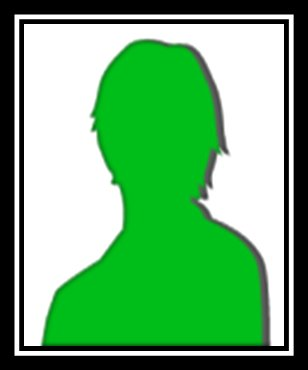
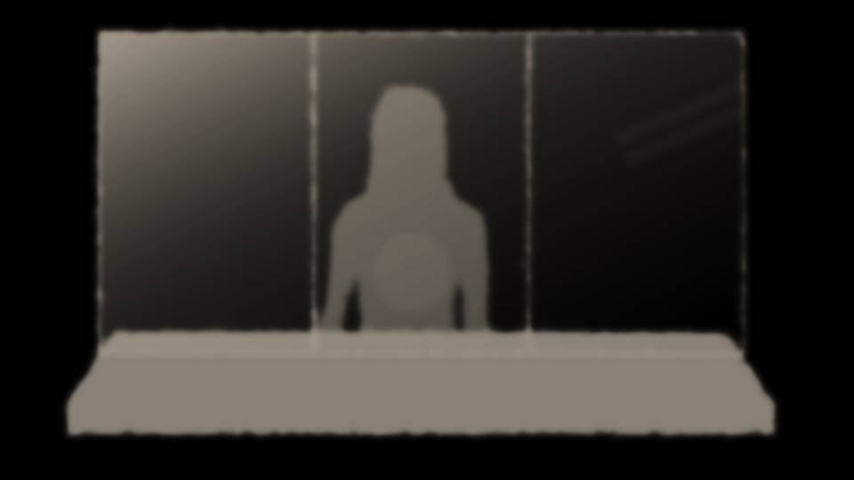

The Mysteries Left Behind




"There, all set!"
Natsumi placed, beside Dad's memorial photo, the memorial photo of her dad.
"Huh, so this is Haruka's dad. Yeah, I remember now!"
With that, Natsumi put her hands together before the photo.
Natsumi placed, beside Dad's memorial photo, the memorial photo of her dad.
"Huh, so this is Haruka's dad. Yeah, I remember now!"
With that, Natsumi put her hands together before the photo.


"Senpai, save the praying for later and help out, please! It's aaall Senpai's stuff!"
"Sorry, sorry!"
"Sorry, sorry!"
"Natsumi's room is this way!"
Starting today, Natsumi was moving into my house.
It really was too big a house for the two of us to live in, now that we'd each been left on our own.
Starting today, Natsumi was moving into my house.
It really was too big a house for the two of us to live in, now that we'd each been left on our own.

"Lucky you two, Senpai...
Oh, I know! Maybe I'll move in too!"
Goto grinned.
"You've got a family! Take care of your family!"
"Stingyyy! Oh, and also, what should we do with these housewarming gifts?"
Natsumi and I had received a lot of housewarming gifts from our friends.
Ise-san had seen to it that a press embargo was put in place for our sake, but rumors got around fast all the same.
At school, almost everyone knew.
Goto grinned.
"You've got a family! Take care of your family!"
"Stingyyy! Oh, and also, what should we do with these housewarming gifts?"
Natsumi and I had received a lot of housewarming gifts from our friends.
Ise-san had seen to it that a press embargo was put in place for our sake, but rumors got around fast all the same.
At school, almost everyone knew.

But everyone welcomed us at school the same as always.
Rather than our parents being criminals, what counted was that we hadn't let it beat us, had stood up to it and caught the culprit in the Megasawa City case, and for some reason we were being treated as heroes.
Rather than our parents being criminals, what counted was that we hadn't let it beat us, had stood up to it and caught the culprit in the Megasawa City case, and for some reason we were being treated as heroes.
On our first day back at school after the incident, we were greeted with applause, but it gave me mixed feelings.
Even so, I was glad I could keep going to school the way I always had.
Even so, I was glad I could keep going to school the way I always had.

"Finally done..."
Goto collapsed onto the sofa.
"Oh, come on, Goto! You haven't even been at it for an hour."
"Buuut... I'm already so hungry..."
Natsumi's other big things, the ones still at her house, were going to be picked up by movers later.
Goto collapsed onto the sofa.
"Oh, come on, Goto! You haven't even been at it for an hour."
"Buuut... I'm already so hungry..."
Natsumi's other big things, the ones still at her house, were going to be picked up by movers later.

"Okay, it's almost lunchtime, so let's order pizza!"
I booted up the computer and opened the online order page.
"Oh, I want this one!"
The supposedly collapsed Goto was peering at the computer screen.
"You're helping us move, so it's on me and Natsumi. Order whatever you want."
"Ohhh! The boss is as generous as ever today!"
I booted up the computer and opened the online order page.
"Oh, I want this one!"
The supposedly collapsed Goto was peering at the computer screen.
"You're helping us move, so it's on me and Natsumi. Order whatever you want."
"Ohhh! The boss is as generous as ever today!"

"Hey, Haruka, I have a little favor to ask...
I want to do the Russian-roulette takoyaki at Zahha again!" [TN: takoyaki: fried batter balls with octopus inside]
This girl... she really is a gambler...!
This girl... she really is a gambler...!
"Speaking of Russian-roulette takoyaki...
did you two ever post on the board? Your measurements, cup sizes and weights."
"Huh? Wh-what was that about again?"
"Never heard of any such thing! Ahahahaha...!"
These two...! What did I go through all that for!
"Huh? Wh-what was that about again?"
"Never heard of any such thing! Ahahahaha...!"
These two...! What did I go through all that for!
"More importantly, Niimura-senpai, did you actually buy a new bra with the change from that time?"
"Shut up! I don't have to tell you that!"
"Well, well, saying that to your investor? Guess I'll need that change back."
"Shut up! I don't have to tell you that!"
"Well, well, saying that to your investor? Guess I'll need that change back."
"You...!
Argh, fine, I bought one, I bought one! I bought it online! It was 2,480 yen with shipping and tax! I'm wearing it right now! It's super comfy!"
"Ohh. So, what cup size was it?"
"Not a chance I'm telling you, you dirty old man!"
"Ohh. So, what cup size was it?"
"Not a chance I'm telling you, you dirty old man!"
"Hmmm. Then I suppose you'll just have to tell me if you lose the match at Zahha."
"Okay! This time let's settle it for real!"
"Are you an idiot?! It got totally settled back then!"
"Are you an idiot?! It got totally settled back then!"
"Well then, Kogori-senpai, Niimura-senpai, let's get going!"
"Today I'm definitely not losing!"
"Will you two listen to me!"
"Today I'm definitely not losing!"
"Will you two listen to me!"


Zahha on the last day of Golden Week was very crowded.
By luck, we managed to get a table that had just opened up.
By luck, we managed to get a table that had just opened up.
"So, um... since the timing's good, I figured I'd tell you guys something...
Actually, I went to see Mom yesterday..."
"Oh, really... So you finally got to visit her."
"Yeah..."
Ise-san had said that, as expected, she probably wouldn't escape the death penalty, and he'd urged me to see her soon.
"Oh, really... So you finally got to visit her."
"Yeah..."
Ise-san had said that, as expected, she probably wouldn't escape the death penalty, and he'd urged me to see her soon.


"It's been a while, Mom..."
"............"
Mom's face was terribly haggard.
Without a trace of the way she used to dress younger than her age, a woman who looked a little older than her actual age was sitting there.
"............"
Mom's face was terribly haggard.
Without a trace of the way she used to dress younger than her age, a woman who looked a little older than her actual age was sitting there.
"Tomorrow, Natsumi's moving into our place. We're both gonna be on our own for a while, so..."
"Natsumi-chan... is she doing all right?"
"Natsumi-chan... is she doing all right?"
"Yeah... Natsumi's mom got arrested too, and her dad died, so...
it was rough for a while, but she's doing a lot better now."
"I see... I'm glad..."
Glad...? I never thought I'd hear that from Mom.
"I see... I'm glad..."
Glad...? I never thought I'd hear that from Mom.
"Mom... what did you mean, what you said back then?
Natsumi's dad saying he couldn't leave me in your care anymore..."
"Because... Haruka, you're my daughter. I never, ever wanted to let you go. Rather than let you go, it would be better if we died together... that's what I thought."
"Because... Haruka, you're my daughter. I never, ever wanted to let you go. Rather than let you go, it would be better if we died together... that's what I thought."
It wasn't quite the answer I'd been looking for.
But I'd thought Mom had been targeting me, so it was a bit of a relief.
So it wasn't that she wanted to kill me. What she'd had in mind was dying together.
But I'd thought Mom had been targeting me, so it was a bit of a relief.
So it wasn't that she wanted to kill me. What she'd had in mind was dying together.
"I see... I was worried what I'd do if you'd wanted me dead 'cause you hated me."
"Haruka, you matter more than anything. Rather than be apart from you, Haruka, I'd be better off dead... I meant to take you, Haruka, with me to Arata. And if that wasn't possible, I thought I'd die together with you, Haruka..."
Why had there been any need to kill Natsumi's dad?
If they'd been close enough to share secrets this deep, there was no real need to kill...
"Haruka, you matter more than anything. Rather than be apart from you, Haruka, I'd be better off dead... I meant to take you, Haruka, with me to Arata. And if that wasn't possible, I thought I'd die together with you, Haruka..."
Why had there been any need to kill Natsumi's dad?
If they'd been close enough to share secrets this deep, there was no real need to kill...
"And anyway, Mom... are you an idiot...?
I don't really know about the old days, but no matter what happened, there's no way I'd ever leave you on your own, is there...?
If you'd told me, wouldn't Natsumi's dad have made it out without dying too?"
Mom just kept looking down.
But I could see tears falling from her eyes.
Mom just kept looking down.
But I could see tears falling from her eyes.

"Hey, Mom... can I come see you again?"
"Haruka, why... why do you smile at me? If it had come to the worst, I'd have killed you too, Haruka. Why would you ever want to see me again..."
"'Cause my mom is the only one I've got... Besides, three times in the past you dirtied your hands trying so hard to save me, didn't you? I can't just cut ties with you..."
"Haruka, why... why do you smile at me? If it had come to the worst, I'd have killed you too, Haruka. Why would you ever want to see me again..."
"'Cause my mom is the only one I've got... Besides, three times in the past you dirtied your hands trying so hard to save me, didn't you? I can't just cut ties with you..."
"I'm...
as a mother...
a failure..."
"Quit saying stupid stuff!"
I reflexively stood up and yelled at what Mom had said.
The guard glanced our way for a moment, but I picked up on it and quietly sat back down.
I reflexively stood up and yelled at what Mom had said.
The guard glanced our way for a moment, but I picked up on it and quietly sat back down.
"Mom... sure, you did something unforgivable!
But... even so...
even so... my mom is the only one I've got...
At school in Megasawa, when I got blamed for stuff like the lunch money and the broken windows...
Mom... you went around apologizing for me...!
Even when things were that rough, Mom, you always told me, 'I'll help you, so tell me anything'!"
"Mom, you really did help me, for years and years...!
The way you did it was wrong, but to save me from the bullying, you got blood on your hands, never knowing when the police would find out...!
And still, you always worried about me and really, truly helped me...!"
"Why would you call yourself a failure as a mother?! Quit screwing around!
Mom... to me, you're the one and only...
best mom in the world...
Dad died, and you went through agony raising me all this way...
I really am grateful...!
I... still love you so much, Mom...!"
"So... so...
please... I'm begging you, don't say you're a failure as a mother...!
The reason I've been able to live for 18 years is all thanks to you...
Mom... there's no mother better than you... not for me...!"
Then Mom stared long and hard at my face.
Then Mom stared long and hard at my face.
"Haruka... you talk just like your dad.
Eiichiro-san was a very kind man. Haruka, your good side came from your dad."
Just then, the guard announced that visiting time was over.
"Haruka, the truth is―"
"What is it, Mom?"
But Mom immediately fell silent.
Just then, the guard announced that visiting time was over.
"Haruka, the truth is―"
"What is it, Mom?"
But Mom immediately fell silent.

"It's nothing...
Haruka, when you turn 20, I'll tell you. This is a promise I made with Akane...
I just hope I'm not executed before then..."
With that, Mom stood up.
With that, Mom stood up.
"You and Natsumi-chan... get along."
Mom said that and left the room.
They were the same words she'd said on the morning of April 8, before she went out.
But this time it wasn't the blank face from that day. It was the only smile she showed me at the visit.
Mom said that and left the room.
They were the same words she'd said on the morning of April 8, before she went out.
But this time it wasn't the blank face from that day. It was the only smile she showed me at the visit.
Mom... what on earth were you trying to say...?
I... what on earth...
I... what on earth...
"Uuu... A love between parent and child that nothing can break! It touches my heart!"
"I'm glad, Haruka!"
By the time I finished talking, Natsumi and Goto were teary-eyed.
"I'm glad, Haruka!"
By the time I finished talking, Natsumi and Goto were teary-eyed.
"Thinking about it that way, my mom's probably in worse shape..."
Natsumi, I'd heard, had also seen her mom on the first day of Golden Week.
I hadn't asked for details, but with her arrest and her husband's death coming on top of each other, it was no wonder she wasn't well.
Natsumi, I'd heard, had also seen her mom on the first day of Golden Week.
I hadn't asked for details, but with her arrest and her husband's death coming on top of each other, it was no wonder she wasn't well.
"In the end, it came to this because I, with the balloon―"
"Natsumi, quit saying that. It was just an accident..."
"Natsumi, quit saying that. It was just an accident..."
"But... in the end, a lot of things are still unclear, aren't they...
Kogori-senpai's dad's murder: we still don't really know the reason for it either.
And what was that spiriting-away in the Megasawa City case all about...?"
"That'll come out sooner or later. Mom and the others probably aren't gonna stay silent at this point..."
"That'll come out sooner or later. Mom and the others probably aren't gonna stay silent at this point..."
"By the way, your grandma, Haruka... is she actually a scary person?
She came across as really intimidating, so..."
"No, no. Sure, she's the head of the Arata settlement and people call her the Grand Witch and all, but normally she's a cheerful, kind person. I can't picture her getting all intimidating like that... Plus, that impression... I've been drilled in it by Grandma since I was little... Grandma's apparently into anime and impressions and cosplay, even at her age..."
"No, no. Sure, she's the head of the Arata settlement and people call her the Grand Witch and all, but normally she's a cheerful, kind person. I can't picture her getting all intimidating like that... Plus, that impression... I've been drilled in it by Grandma since I was little... Grandma's apparently into anime and impressions and cosplay, even at her age..."
"Is that so... But to think someone like that had a hand in murder, even indirectly..."
"Actually, that's been bugging me a bit too. The Arata settlement's insular, sure, but I just can't picture Grandma doing something like that... Basically, nobody could pull something like that without Grandma's permission... If you two ever meet my grandma, you'll be shocked at how cheerful she is."
"Actually, that's been bugging me a bit too. The Arata settlement's insular, sure, but I just can't picture Grandma doing something like that... Basically, nobody could pull something like that without Grandma's permission... If you two ever meet my grandma, you'll be shocked at how cheerful she is."
"So you mean there was someone in the settlement helping out without telling anyone?"
"I guess that's how it'd be. If I had to think of someone... hmm, who could it be..."
"I guess that's how it'd be. If I had to think of someone... hmm, who could it be..."
"Sorry for the wait. Russian-roulette takoyaki, 12 pieces, two duds."
Here they come...!
But it's fine! I worked out a sure-win method last time!
If I watch the colors and these two's behavior closely, it'll be my total victory again!
Here they come...!
But it's fine! I worked out a sure-win method last time!
If I watch the colors and these two's behavior closely, it'll be my total victory again!

"Senpai, let's take turns by age here."
"No way! We're doing rock-paper-scissors after all, to keep it fair!"
"Tch...!"
"Tch...!"
This time even Natsumi had the nerve to click her tongue...!
"No way! We're doing rock-paper-scissors after all, to keep it fair!"
"Tch...!"
"Tch...!"
This time even Natsumi had the nerve to click her tongue...!
"Then you open it, as the eldest, Niimura-senpai.
Be very... very careful..."
"This is a vital role, Haruka... Break the seal..."
These two always use the same lines.
"This is a vital role, Haruka... Break the seal..."
These two always use the same lines.

Yeah, yeah, smoke, smoke. If they can rig up stuff like this, they could at least knock a little off the price...
―Gradually the smoke cleared.
Yeah, yeah, red, yellow, green, black.
―Gradually the smoke cleared.
Yeah, yeah, red, yellow, green, black.


All black?!
Last time I won by thinking about the colors, but now there's no way to think it through at all!
Last time I won by thinking about the colors, but now there's no way to think it through at all!

I glanced at the waitress who'd brought the takoyaki.
I didn't miss the smirk that flashed across her face for an instant.
I didn't miss the smirk that flashed across her face for an instant.
Read ✓ Next in this arc →